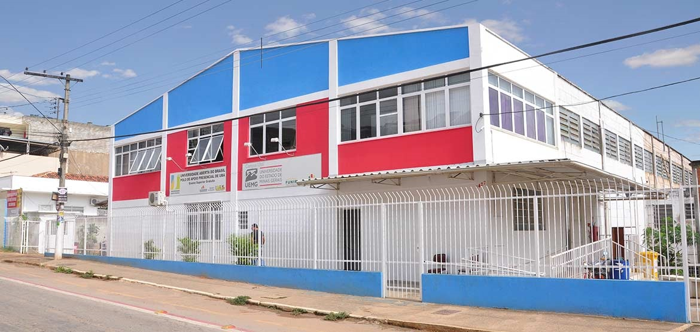

Endereço localizado
Escolha um logradouro na lista para ver o endereço completo e o CEP.
- Logradouro
- —
- Bairro
- —
- Complemento
- —
- Cidade/UF
- Ubá / MG
- DDD · IBGE
- —
CEP
CEP · 36500 · Ubá — MG
Um catálogo de bolso das ruas, avenidas e praças de Ubá. Digite três letras e receba o CEP — sem selo, sem fila, sem cadastro.

Digite pelo menos 3 caracteres para ver sugestões.
Escolha um logradouro na lista para ver o endereço completo e o CEP.
CEP